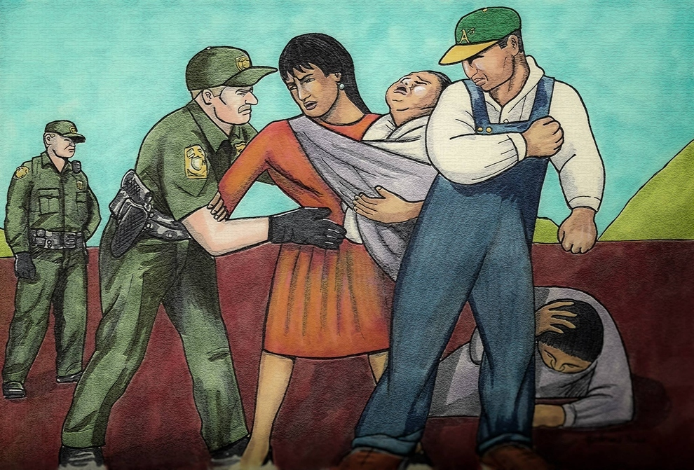

Todos Unidos
Nuestra Vida
Nuestro Futuro
Breaking News
SEE MORE HERE
Home
Political Rights
Political Stats
Resources
Citizenship Quiz
About Us

Home
Source
Objective
Our objective is to keep families together and let them live their lives peacefully, we are doing this by informing them about current immigration events. The political atmosphere we are currently living in dehumanizes immigrants and this website serves as a resource to equip our visitors with valuable information such as immigrant rights, policies, statistics, and upcoming important deadlines. We want our people to be safe and to feel in control of their lives. Politicians have labeled immigrants as "aliens", which creates a divide and a unwelcoming. This dehumanizing stereotype creates fear amongst innocent lives that are fighting for their freedom and their children's freedom.
Breaking News
Senator Dick Durbin and many more discussed with Trump about The DACA bill being pushed and argued on the contrary that people who were brought into this country as children's “fairly” should not be judged as Trump has categorized all of us as “bad hombres”. Although Trump has stated that DACA is a tough issue and that they have not come to an agreement The Department of Homeland Security stated that people who are still applying are eligible for renewable status’. More than 780,000 people signed up for DACA since 2012, and over one million more might still be eligible for DACA. To qualify for DACA you need a criminal background check, have had employment for 3 years, either obtain a GED or be a U.S graduate from high school.
MORE INFO